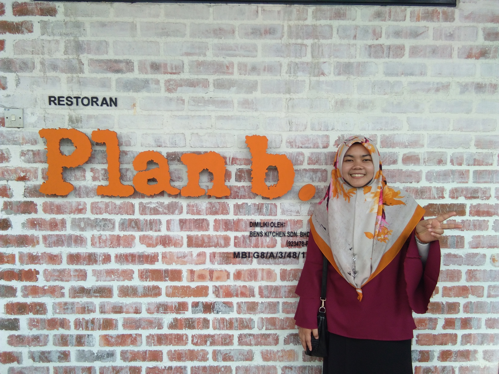

This is my dad. His name is Hamerudin bin Mohd Jamil. He was 61 years old. He used to work as a health worker in Pejabat Vektor Kuala Kangsar. But now he is retired. He always took his family for a holiday everywhere when all family members have free time. When he was bored sitting at home, he would go fishing at Sungai Perak.
Woman wearing brown scarf is my mother. Her name is Jamilah binti Mohamed. My mother passed away in 2017 when she was 51 years old. She passed away because of a brain tumor. In 2014, she had surgery for breast cancer and healthy back. In 2016, she had a brain tumor. My mother was a good cook. All of her dishes were delicious.

This is my first sister and we call her along. Her name is Norhasmiza binti Hamerudin. Now she is 29 years old and still unmarried. She worked as a teacher in a Little Caliphs kindergarten. She was also a clever and diligent in cooking. She always cooks when she has a lot of free time at home.
Next, this is my second sister and we call her angah. Her name is Norhasmira binti Hamerudin. She is 27 years old and still unmarried. She graduated from Kolej Risda for diploma and Uitm Jasin for bachelor. Both in Malacca. She also diligently in making bread and cakes during her leisure time.
I am Hidayah and they called me kakak. I was the third child in a siblings. I was a kind of eat a lot but opted for not eating vegetables, fish and many more. I also cannot eat eggs because my ear canals will pus. I am currently pursuing a degree of Bachelor in Office Systems and Management. I took this course because I love working in the office and using computers.
Lastly, this is my sister and she is the youngest in the family. We call her adik. Her name is NurHayani binti Hamerudin. She is 17 years old and this year she took Sijil Pelajaran Malaysia (SPM). She went to school at Smk Simpang Beluru. She stayed in the dorm and returned home on the weekends. She is also good in cooking.